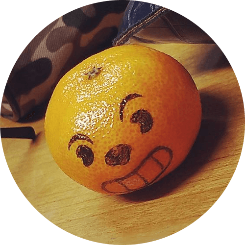

Présentation
Clément MOINE
Développeur Full-Stack
J'ai 21 ans, je suis développeur, graphiste, dessinateur, vidéaste et bien d'autres choses !
Je me passionne pour beaucoup de choses, j'aime découvrir et faire découvrir.
Si vous me cherchiez, vous venez de me trouver et je suis enchanté de faire votre connaissance !
